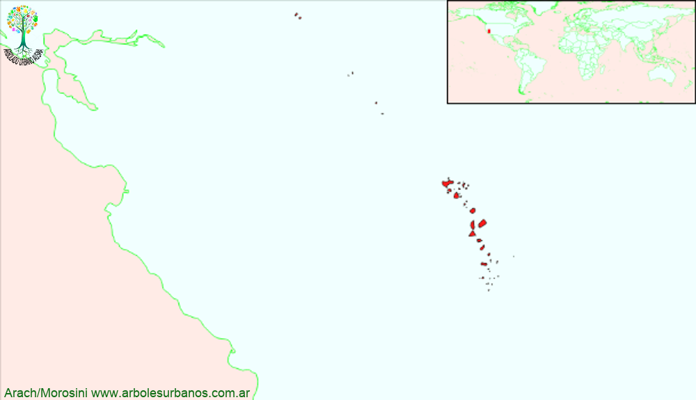

Click en las imágenes para ampliar

{kind=link}
{kind=link}
{kind=link}
- NOMBRE CIENTÍFICO
- Sequoiadendron giganteum
- FAMILIA BOTÁNICA
- Taxodiáceas
- ORIGEN
- Su área de distribución es bastante reducida, un total de 15.000 hectáreas, pero distribuidas en 70 rodales, en el centro-oeste del estado de California sobre la Sierra Nevada
- DESCRIPCIÓN GENERAL
- Árbol de gran talla superando los 70 metros y los 7 metros de diámetro a la altura del pecho. Posee una copa de forma estrechamente cónica, con las ramas basales algo inclinadas y la base del tronco engrosada, dándole su porte característico. Su corteza es marrón rojiza fibrosa y fisurada longitudinalmente. La hojas son escuamiformes y de ápice agudo de color verde claro, son imbricadas cubriendo la totalidad de los tallos jóvenes.
- ESTROBILOS
- Los estróbilos aparecen a fines de otoño, los masculinos son pequeños y de color amarillos, los femeninos son ovoideos de color verde y tardan dos años en madurar completamente formando una piña de color marrón rojizo, pueden permanecer más de 20 años sobre el árbol.
- USOS
- En su lugar de origen se realizan plantaciones de esta especie, su madera tiene diversos usos, pero fundamentalmente tiene uso ornamental, en lugares tan diversos como Nueva Zelanda o España.
- REPRODUCCIÓN
- Lo más usual es multiplicarla por semillas, necesitan estratificación de 35 a 45 días. Los conos recogidos en otoño se deben dejar secar para poder separar las semillas, luego se deben conservar a 4º de temperatura. Las variedades es necesario reproducirlas por injerto.
- PARTICULARIDADES
- Es una de las especies más longevas, superando los 4.000 años de edad. Además el mayor ejemplar vivo mide 84 metros de altura y tiene un diámetro de 10 metros llegando a tener más de 1400 m³ de volumen y se estima que tiene un peso de 2.100 toneladas